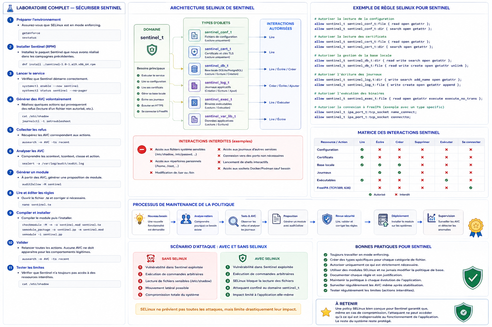

Chapitre 6.6 — Sécuriser Sentinel avec SELinux
Campagne 6 — SELinux
« Le confinement utile autorise la mission du service et rend le reste explicitement imprévu. »
Vous êtes ici
Partie I — Construire un socle sécurisé
Campagne 6 — SELinux
6.1 Pourquoi SELinux existe
6.2 Les contextes
6.3 Les politiques
6.4 Diagnostic des refus
6.5 Création de règles
► 6.6 Sécuriser Sentinel avec SELinux
Objectifs pédagogiques
À la fin de ce chapitre, vous serez capable de :
- construire le modèle d'accès de Sentinel
0.4.0; - définir ses domaines, types de fichiers et type de port ;
- mettre un domaine en observation sans désactiver SELinux globalement ;
- vérifier les comportements permis et les refus attendus ;
- livrer une politique versionnée, testable et réversible.
Pourquoi ce chapitre existe
Sentinel est devenu un service systemd résilient en campagne 5. Il possède donc assez de surface concrète pour être confiné : code, configuration, état local, notification systemd et port réseau.
La campagne 6 ne modifie pas le code Python. Elle ajoute une politique SELinux 0.1 autour de Sentinel 0.4.0. Les certificats de la campagne 7 et les identités de la campagne 8 ne doivent pas être autorisés par anticipation.
État fonctionnel à confiner
Le service installé doit pouvoir :
- exécuter
/opt/sentinel/bin/sentinelet importer les modules Python voisins ; - lire
/etc/sentinel/sentinel.conf; - créer et remplacer
/var/lib/sentinel/status.json; - notifier systemd via la socket indiquée par
NOTIFY_SOCKET; - écouter sur TCP 8443 et joindre ce point local pour son healthcheck ;
- écrire sur les sorties héritées que systemd collecte dans le journal.
Il n'a pas besoin de lire les comptes locaux, les clés privées du système ou l'ensemble de /etc.
Construire la matrice d'accès
Une matrice précède toujours les règles :
| Source | Cible | Opérations nécessaires | Preuve |
|---|---|---|---|
sentinel_t |
sentinel_exec_t |
transition au lancement | domaine visible dans ps -eZ |
sentinel_t |
sentinel_lib_t |
lire et mapper les modules | service démarré |
sentinel_t |
sentinel_conf_t |
lire la configuration | démarrage avec le fichier de référence |
sentinel_t |
sentinel_var_lib_t |
créer, lire, remplacer l'état | status.json mis à jour |
sentinel_t |
socket systemd | envoyer READY=1 et WATCHDOG=1 |
unité active sans délai |
sentinel_t |
sentinel_port_t |
lier TCP 8443 et s'y connecter localement | routes et healthcheck fonctionnels |
Cette table décrit le résultat attendu. Les interfaces exactes peuvent varier avec la version de la politique de distribution ; elles doivent être validées sur la plateforme cible.
Créer le squelette de politique
Commencez par le générateur, puis relisez ses résultats :
mkdir -p ~/sentinel-selinux
cd ~/sentinel-selinux
sepolicy generate --init /opt/sentinel/bin/sentinel
Renommez et simplifiez les sources si nécessaire pour obtenir un dépôt clair :
sentinel-selinux/
├── README.md
├── sentinel.te
├── sentinel.fc
├── sentinel.if
└── tests/
└── acceptance.md
Le générateur fournit une base dépendante de la machine. Les extraits suivants donnent l'intention à retrouver, pas un module universel à installer sans compilation ni tests.
Définir domaine et types
Dans sentinel.te, la déclaration de départ peut prendre cette forme :
policy_module(sentinel, 0.1)
type sentinel_t;
type sentinel_exec_t;
init_daemon_domain(sentinel_t, sentinel_exec_t)
type sentinel_lib_t;
files_type(sentinel_lib_t)
type sentinel_conf_t;
files_config_file(sentinel_conf_t)
type sentinel_var_lib_t;
files_type(sentinel_var_lib_t)
type sentinel_port_t;
corenet_port(sentinel_port_t)
init_daemon_domain prépare la transition depuis le gestionnaire de services. Les types distincts empêchent qu'une règle de lecture de configuration devienne une règle d'écriture sur l'état.
Ajoutez ensuite des interfaces exprimant les besoins sur les fichiers :
read_files_pattern(sentinel_t, sentinel_lib_t, sentinel_lib_t)
read_files_pattern(sentinel_t, sentinel_conf_t, sentinel_conf_t)
manage_dirs_pattern(
sentinel_t,
sentinel_var_lib_t,
sentinel_var_lib_t
)
manage_files_pattern(
sentinel_t,
sentinel_var_lib_t,
sentinel_var_lib_t
)
La mise à jour atomique de status.json peut créer un fichier temporaire, le renommer puis supprimer l'ancienne entrée. Testez ce cycle complet : un simple droit write sur le fichier existant serait insuffisant.
Déclarer les chemins persistants
Dans sentinel.fc :
/opt/sentinel/bin/sentinel -- gen_context(system_u:object_r:sentinel_exec_t,s0)
/opt/sentinel/bin/[^/]+\.py -- gen_context(system_u:object_r:sentinel_lib_t,s0)
/etc/sentinel(/.*)? gen_context(system_u:object_r:sentinel_conf_t,s0)
/var/lib/sentinel(/.*)? gen_context(system_u:object_r:sentinel_var_lib_t,s0)
Adaptez l'expression des modules au contenu réellement installé. N'étiquetez pas tout /opt ou tout /etc avec un type Sentinel.
Après installation du module :
sudo restorecon -Rv /opt/sentinel/bin /etc/sentinel /var/lib/sentinel
ls -lZ /opt/sentinel/bin /etc/sentinel /var/lib/sentinel
Autoriser le réseau utile
Le domaine a besoin de créer une socket TCP, de lier le port applicatif et de joindre le serveur local pour son healthcheck. Une base représentative est :
allow sentinel_t self:tcp_socket create_stream_socket_perms;
corenet_tcp_bind_generic_node(sentinel_t)
allow sentinel_t sentinel_port_t:tcp_socket { name_bind name_connect };
Les interfaces réseau disponibles dépendent de la distribution. Interrogez les sources installées et la politique chargée avant de retenir ces lignes.
Associez ensuite TCP 8443 au type de port. Vérifiez d'abord s'il possède déjà une association :
sudo semanage port -l | grep -w 8443
S'il n'est pas déclaré :
sudo semanage port -a -t sentinel_port_t -p tcp 8443
S'il est déjà déclaré sous un autre type et que la modification est compatible avec les autres services qui l'utilisent :
sudo semanage port -m -t sentinel_port_t -p tcp 8443
Ne réaffectez pas silencieusement un port partagé. Une collision doit conduire à revoir le port ou l'architecture.
Traiter la notification systemd
Sentinel utilise Type=notify et le watchdog. L'autorisation exacte de la socket systemd dépend des interfaces fournies par la politique installée.
- recherchez une interface documentée dans
/usr/share/selinux/devel/include/; - démarrez le service avec le seul domaine Sentinel en permissif ;
- corrélez l'AVC avec l'appel de notification ;
- ajoutez l'interface la plus étroite ;
- repassez le domaine en application.
N'accordez pas un accès général à var_run_t : cette catégorie contient les ressources d'exécution de nombreux services.
Compiler et installer la politique 0.1
cd ~/sentinel-selinux
make -f /usr/share/selinux/devel/Makefile sentinel.pp
sudo semodule -i sentinel.pp
sudo semodule -l | grep '^sentinel'
sudo restorecon -Rv /opt/sentinel/bin /etc/sentinel /var/lib/sentinel
Vérifiez aussi la correspondance du port et les types attendus :
sudo semanage port -l | grep sentinel_port_t
matchpathcon -V /opt/sentinel/bin/sentinel
matchpathcon -V /etc/sentinel/sentinel.conf
matchpathcon -V /var/lib/sentinel/status.json
Observer uniquement le domaine Sentinel
Pendant la mise au point :
sudo semanage permissive -a sentinel_t
sudo systemctl restart sentinel
sudo ausearch -m AVC,USER_AVC -ts recent -c sentinel -i
Exercez toutes les fonctions acquises, pas seulement le démarrage. Chaque AVC doit être associé à une ligne de la matrice ou rester refusé.
Quand les règles sont relues :
sudo semanage permissive -d sentinel_t
sudo systemctl restart sentinel
getenforce
ps -eZ | grep sentinel
Le processus doit apparaître dans sentinel_t alors que le système reste en mode Enforcing.
Prouver le fonctionnement et le confinement
Cas passants
Adaptez l'option de configuration si votre unité la fournit autrement :
systemctl status sentinel --no-pager
curl --fail http://127.0.0.1:8443/health
curl --fail http://127.0.0.1:8443/ready
sudo -u sentinel /opt/sentinel/bin/sentinel \
--config /etc/sentinel/sentinel.conf --healthcheck
sudo ausearch -m AVC,USER_AVC -ts recent -c sentinel -i
Les routes doivent répondre, le healthcheck doit réussir et aucun AVC inattendu ne doit apparaître.
Exécutez aussi les tests cumulés du checkpoint applicatif depuis les sources :
python3 -m unittest discover \
-s sentinel/labs/sentinel-app/checkpoints/0.4.0/tests -v
Refus attendus
La politique doit également prouver ce qu'elle n'accorde pas. Interrogez par exemple la lecture du type des mots de passe chiffrés :
sesearch -A -s sentinel_t -t shadow_t -c file -p read
Une sortie vide est attendue pour ce filtre. Vérifiez également qu'aucune règle générale vers etc_t ou var_t n'a été introduite pour masquer un mauvais contexte.
Enfin, rendez temporairement illisible une copie de configuration placée sous un type non prévu et confirmez que le démarrage échoue avec un AVC. Revenez ensuite au fichier normal avec restorecon.
Retour arrière
Documentez les valeurs observées avant installation. Un retour arrière du laboratoire comprend :
sudo semanage permissive -d sentinel_t
sudo semodule -r sentinel
sudo semanage port -d -p tcp 8443
La suppression de l'association de port n'est correcte que si votre procédure l'a créée et qu'aucun autre module ne la possède. Après retrait, réappliquez les contextes standards avec restorecon sur les chemins concernés et contrôlez le résultat.
Jalon Sentinel
État de départ
Sentinel 0.4.0 fournit le serveur HTTP, les routes /health et /ready, l'état local, l'intégration systemd, les journaux structurés, le watchdog et l'arrêt propre.
Besoin
Une compromission du processus ne doit pas hériter de tous les accès de l'utilisateur de service. Les fichiers, le port et les interactions système doivent former un contrat contrôlé par SELinux.
Modification
Le code reste en 0.4.0. Un livrable séparé sentinel-selinux 0.1 ajoute :
- le domaine
sentinel_tet sa transition depuissentinel_exec_t; - les types du code, de la configuration, de l'état et du port ;
- les règles de fichiers, réseau et notification strictement observées ;
- la procédure d'installation, de test et de retrait.
Migration
Les chemins, options, routes et données restent compatibles. L'installation du module est suivie de restorecon, de l'association contrôlée du port 8443 et d'un redémarrage de l'unité.
Preuves
- module compilé et chargé ;
- processus visible dans
sentinel_ten modeEnforcing; - routes, état local, notification systemd et healthcheck fonctionnels ;
- tests Python
0.4.0réussis ; - aucun AVC inattendu après la campagne de tests ;
- aucune lecture de
shadow_taccordée.
Échecs attendus
- une configuration portant un type non prévu est refusée ;
- un accès à une ressource système hors contrat reste refusé ;
- le service échoue si son port n'est pas correctement associé ou autorisé.
Livrable
Sentinel 0.4.0 et sentinel-selinux 0.1, accompagnés de leurs sources et preuves, deviennent l'entrée de la campagne 7. Cette campagne étendra la politique seulement lorsque les fichiers TLS existeront réellement.
Synthèse
- la politique part des fonctions réellement présentes dans Sentinel
0.4.0; - le code, la configuration, l'état et le port reçoivent des types distincts ;
- les contextes de chemins sont persistants grâce au fichier
.fc; - l'observation se fait en permissif par domaine, puis les tests se terminent en
Enforcing; - une preuve comporte des cas passants et des refus attendus ;
- la politique
0.1est versionnée séparément de l'application.
Schéma récapitulatif

Pour aller plus loin
La campagne 7 introduit les certificats, HTTPS et l'authentification TLS. La politique SELinux n'évoluera qu'après observation de ces nouveaux besoins.
Continuer vers la campagne 7 — TLS, certificats et PKI
Référence : Red Hat Enterprise Linux 9 — Writing a custom SELinux policy.